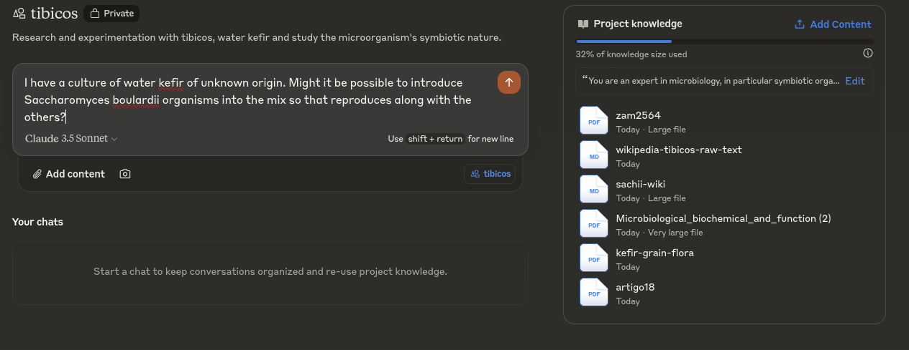
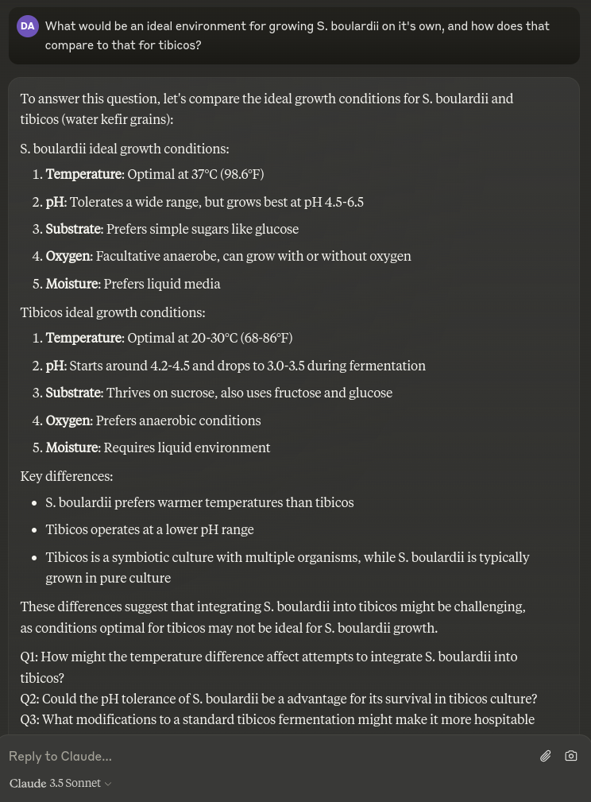

#
Rainsday
It's pouring with rain, but I'm hoping to be going out later. When Mari messages to say my meds prescription is ready to pick up, we'll go ut for that, do a bit of shopping and have a coffee. There's also a little panelling job for me to do at hers, when convenient.
Before I got up I did a bit of exploration around formulas for determining task priorities, with much help from Claude AI on the phone. Got to v1 bits for #Farelo.
TODO
form-a-matic first
get Claude to make a test for extractor.js, sim from form with jsdom
Interruption - trip into town.
form-a-matic is proceeding ok. But given the new TODOs below, I'm inclined to procrastinate a little to make a little #productivity timesaver.
A #:pain at the moment is the chain of run #:postcraft on projects -> commit projects (in the correct order) -> push -> server pull. I'd better have this as a #:transmission.
...oops, mind wandered from that #:adhd, heh.
Which calls for new processors. Docs can start in #:transmissions:processors (#:specs:md)
Ops, I see #:yars approaching - Yet another RDF syntax. I've got notes on #md:rdf somewhere, #:todo:link. But this may have potential for quick & dirty inline RDF, eg. #(anchor):seeAlso:link ...hmmm...
Back to the first diversion. #:transmissions:processors:github - document in transmissions/postcraft/content-raw/articles/processors/* and or around #:trans-apps:github
pali wan[^1]
#:paliwan
#:markdown
I must remember to use the ongoing danny.ayers.name/todo/2024-10.md, together with sub-project todo/next-steps.md.
Also markdown:
- [ ] todo item 1
- [ ] todo item 2
I don't yet have a handler for that syntax,
Chat on LinkedIn has pushed a few things up my priority list.
New :
I'll get Claude to help me with my CV. Create a Project "PR" and add some of my small publication PDFs as Project knowledge.
Before anything else (but after making a coffee), I'll have an hour or so on #Farelo form-a-matic. That feels close to a working v1, soon should be very helpful for my productivity and also feeds a couple of nearby birds[^1].
[1^]: "pali wan, kama pini tu."
I just checked back on this :
https://www.reddit.com/r/tokipona/comments/1fgj8ae/kill_two_birds_with_one_stone/
There was a new suggestion. So I asked Claude :
What is the toki pona "pali wan, kama pini tu." in English?
The Toki Pona phrase "pali wan, kama pini tu." can be translated to English as:
"Do one task, finish two."
This phrase uses the following Toki Pona words:
pali: work, do, make
wan: one
kama: to become, to arrive, to bring about
pini: end, finish, complete
tu: two
The meaning conveys the idea of efficiency or accomplishing more than expected - by doing one task, you end up completing two things. It's similar to the English saying "killing two birds with one stone."
#
Moonday
Sort out storage, lighten /, clone media to music room
TODO note about zooming in and out of projects, cf. Chris advanced driving
form-a-matic
maa-mail
office shelves
tibicos
kitchen table
transmissions simple runner
transmissions processor dirs
ELFQuake init
transmissions Turing
turtle writer
look into calling Termux from Android app (to run #Transmissions)
look into browser build of transmissions - webpack?
in fam, modify so fields can be given a sample value for testing
homepage
Posted somewhere in the early hours last night
I really like sound of this version of 'Blue Monday',
https://www.youtube.com/watch?v=cHLbaOLWjpc
but there are many, many things about the video that annoy me. A small sample :
- that's a cruddy monochord (I made one as a pressie for oor Nigel, much more practical & prettier)
- the sig gen looks at least late 40s
- voice short delay effect - how? It's generally taken that the first time an artificial reverb effect was used was in 1947. The producer's bathroom, for this : https://www.youtube.com/watch?v=9BIuX7IsdE8
- where is the vocal chorus coming from? (Ok, magnetic wire recording had been around a while, tape was just emerging, you could overlay - but they were all really big machines, valve/tube electronics, I don't see one)
- NO-ONE IN THEIR RIGHT MINDS USES RUSTY STRINGS
However, all these are coumterbalanced for me by intrigue on the 4-stringed hammered thing (what is that called?) and most of all by imagining - Stephen Morris drum roll, tss tss tss...
Peter Hook playing a banjolele.
(I've actually got one, they are probably the most ridiculous instrument in human history. A meeting of the best engineering and craftwor., The end result having the worst features of both banjos and ukuleles.
I'm guessing me dad found it in a charity shop. Has been desperately in need of repair for decades, this might be motivation for me to get around to it. Also the mandolin sharing the same cardboard box I got from a car boot sale years back, which had no back and a broken front, which I did resurrect - so badly it has needed gluing back together since a week after my fix- accursed kerfs!).
How does it feel?
https://youtu.be/6uU9ikIg8FU?t=90
#
Unsday
I got totally distracted during the day. In the evening I just gave up, went out for a beer.
What was today's list moved to 2024-09-30
#
Wall-Y
This evening there's the inauguration open day of Apuano Appeso ASD arrampicata indoor climbing wall, 1/2 hour drive (thanks Mari!) down the valley in Gallicano. Run by the same (welcoming, helpful) folks that had one very nearby in Pieve Fosciano which I went to a few times last year.
TODO finish notes from yesterday
- mail MAA
- sort climbing gear
- office shelves
- Ollama Phi-3.5
- Alife
- Atom feed
- sparql-store-lite


#
Lively Distractions
2024-09-28 Yesterday I was too busy doing things, head firing on way too many cylinders, so only wrote down reminders. I'll flesh them out a little now.
Tibico Research
Last month Oriana asked me to look after her jar of Tibicos aka water kefir. It's fascinating stuff, I've already started experimenting. It also made a nice test case for using Claude AI's Projects for research. I had only used them for software projects, for which they are great (with the help of repopack). I know virtually nothing about microbiology (though have been interested a while - I've got a usable microscope etc), so this topic offered a good virgin project.
I created the Project and set up a custom prompt. Then added the 'Edit' raw text of the Wikipedia page on Tibicos and that of Saccharomyces boulardii (a probiotic - that page is an interesting read), together with 4 papers linked from Wikipedia, to Project Knowledge.
It worked really well, I immediately had a useful expert on hand.
I was curious how viable it might be to incorporate the probiotic critter into the existing symbiotic tibicos culture. Here's how the chat started :

By the 4th interaction we were at this :

Alife
Thinking about real (little) life reminded me of alife. I had to have a play with Claude. Not long ago danbri showed me things he'd been able to build.
Claudio
Farelo bits
write requirements first!
convert into prompt if appropriate
farelo metrics
sparql-store-lite
Many of my [hyperdata](https://hyperdata.it] projects require a SPARQL store. I'm in the process of setting up Fuseki on my server. It's my go-to for self-hosted, very capable and straightforward to set up. (Virtuoso and Ontotext are among other out-of-the-box alternatives, but I've also history of coding with Apache Jena libs on which Fuseki is built, so it's an obvious default).
Long-term, this time around I want to use LDAP-backed auth on my server which is taking a bit of time (I've already had to hack a bit of connector code for Apache Shiro. I used to know Java, eh...). I do have Fuseki running on my desktop, but while I was mulling this over I remembered that I'm meant to be writing some docs for Bergi's RDF-Ext. For which I need to get familiar with it. A little file-system backed SPARQL store running on nodejs would be a great little project, likely to be very useful for debugging #Transmissions.
So locally :
cd /home/danny/github-danny/hyperdata/packages
git submodule add https://github.com/danja/sparql-store-lite.git sparql-store-lite
Claude offered me a starting point, beginning :
import rdf from 'rdf-ext'
import N3 from 'n3'
import { SparqlParser } from 'sparqljs'
import { QueryEngine } from 'rdf-query-engine'
// ...
@rdfjs/parser-n3
nvm install node
npm install -g npm@latest
npm -v
webpack transmissions for in-browser
To interact with GitHub's API using Node.js, here are some suitable libraries ranked by activity, coverage, and popularity:
Octokit (https://github.com/octokit/octokit.js)
- Official GitHub REST API client for JavaScript
- Very active development, excellent coverage, and widely used
- Supports both REST and GraphQL APIs
@octokit/rest (https://github.com/octokit/rest.js)
- Part of the Octokit ecosystem, focused on REST API
- Active development, great coverage for REST API, popular
axios (https://github.com/axios/axios)
- General-purpose HTTP client, can be used with GitHub API
- Very active, widely used, but requires more manual setup for GitHub specifics
These libraries are well-maintained, offer good coverage, and are popular in the Node.js ecosystem for GitHub API interactions.
Q1: What specific GitHub API features are you looking to implement in your transmissions processors?
Q2: Do you have a preference for using REST API or GraphQL API for GitHub interactions?
Q3: Are there any specific authentication methods you need to support (e.g., OAuth, Personal Access Tokens)?